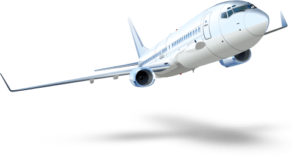

JOIN QATAR AIRWAYS PRIVILEGE CLUB
Exclusive benefits include:
Book award tickets and upgrades
Use Qmiles on flights, cabin upgrades and more.
Earn Qmiles on the ground
Spend at Qatar Duty Free and collect Qmiles.
Your Qmiles will last longer than ever before
Earn or spend Qmiles to keep them active for 3-years.
Enjoy international lounge access
Available to Silver, Gold and Platinum members.
Upgrade to Business Class with Qcredits
Qcredits are available to Gold and Platinum members
Enhancing our global community, one sponsorship at a time
Qatar Airways proudly supports a wide range of sporting activities and initiatives around the world, expanding our brand visibility and establishing lasting and loyal relationships with our customers.
Federation Internationale de Football Association (FIFA)
Official Partner and the Official Airline
Upcoming events sponsored by Qatar Airways will include the 2018 FIFA World Cup in Russia, the FIFA Club World Cup, the FIFA Women’s World Cup, the 2022 FIFA World Cup in Qatar and the FIFA eWorld Cup, the world’s largest online gaming tournament.
Qatar Tennis Federation Tournaments: Men's Open and Ladies Open
Official Airline Partner and Retail Sponsor
Qatar Airways is a proud sponsor of the men’s Qatar ExxonMobil Open and the women’s Qatar Total Open. Both tournaments attract many of the world's top tennis players, who compete for the championship trophy.
CHI AL SHAQAB
Official Airline Partner
CHI AL SHAQAB is the first equestrian competition of its kind in the Middle East and Asia to be sanctioned by the FEI (Fédération Equestre Internationale or International Equestrian Federation) and one of only four CHI equestrian events in the world.
Sydney Swans
Official International Airline Partner
The sponsorship marks first foray into the Australian Football League (AFL) for Qatar Airways.